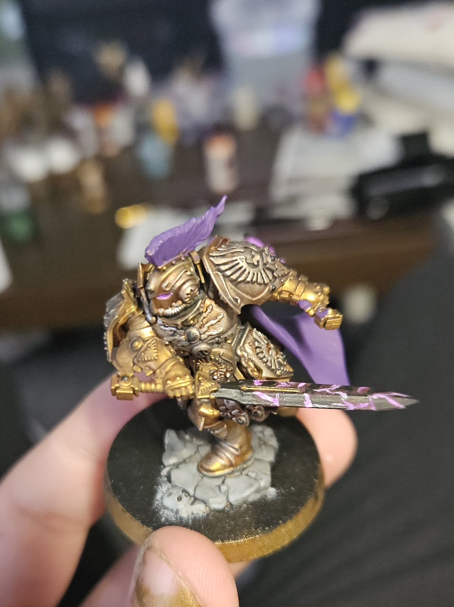

- Pathfinder 2e Edition
Is een ttrpg ofwel een TableTop RolePlaying Game
- Mijn leger in
Warhammer.
Warhammer is een TableTop Wargame. Ook een soort spel waarin alle speler hun eigen leger het bord opsturen om controle nemen over het slagveld.
 - Tarragon
Is een organisatie waar ik deel van uitmaak die mensen met de zelfde hobby's als bordspellen etc samenbrengt.